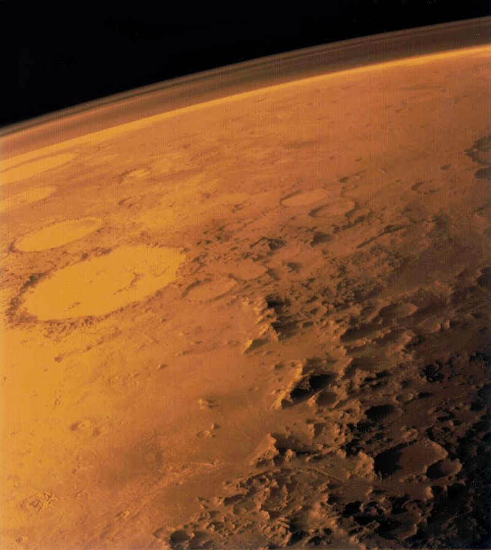

Opcenito
Mars je četvrti planet po udaljenosti od Sunca, vidljiv sa Zemlje prostim okom i zato poznat od davnine. Mars nosi ime rimskog boga rata i često je nazivan Crvenim planetom zbog njegove crvene boje.Po uzoru na stara češka imena planeta, Hrvati kajkavskog narječja jedno su vrijeme upotrebljavali imena Strah, Užas i Ognjenica
Promjer mu je 6 794 km, masa 0,107 Zemljine mase, srednja gustoća 3,94 ∙ 103 kg/m3, a površinsko ubrzanje sile teže 0,38 ubrzanja sile teže na Zemlji. Ima dva pratioca nepravilna oblika, Deimos (11 km × 12 km × 15 km) i Phobos (19 km × 22 km × 27 km). Sunčev mu dan traje gotovo kao i Zemljin, 24 h i 37 min. Oko Sunca obiđe za 687 zemaljskih dana, od Sunca je prosječno udaljen 228 milijuna km, a zbog nagiba osi vrtnje prema ravnini staze od 25°12′ i izduljenosti staze, pokazuje godišnja doba.

Atmosfera
Marsova je atmosfera rijetka u usporedbi sa Zemljinom. Tlak u području srednje površinske razine iznosi 7 mbar (oko 150 je manji nego na Zamlji na razini mora). No, u razno doba godine i na raznim mjestima mjeri se od 1 do 10 mbar. Marsova atmosfera se sastoji uglavnom od ugljičnog dioksida (95,32%), uz male primjese drugih elemenata: dušika (2,7%), argona (1,6%), kisika (0,13%) i neona (0,00025%). Također sadrži i vodenu paru (0,03%), a u polarnim krajevima je nađen ozon.
Polarne kape zimi se prošire do 40 - 50° areografske širine (Mars je latinsko ime, Ares starogrčko). Zato se na Zemlji računaju zemljopisne širine i dužine, a na Marsu areografske. Ljeti se južna kapa smanji na 400 km, a sjeverna na 800 km. U atmosferi iznad kapa zna biti povećan sadržaj vodene pare, a one same pokrivene dugotrajnom sumaglicom. Jedan sastojak polarne kape čini voda, jer polarna kapa ne isčezava sublimacijom ugljikovog dioksida, a temperatura se uvijek zadržava ispod ledišta vode.

Reljef
Marsov pejzaž sličan je Zemljinom i Mjesečevu, no ima i svojih posebnosti. Teren je prosječnog nagiba 3°. Površina Marsa je crvene boje zbog velikih količina željeza koje sadrži. Možemo je podijeliti na sjevernu i južnu polutku granicom koja siječe ekvator pod kutem od 35°.
Teren južne je u prosjeku 2-3 kilometra viši od sjeverne, uglavnom zbog razlike u gustoći kore. Južna polutka puna je udarnih meteorskih kratera veličine od 3 do 120 km nastalih u doba bombardiranja planetoidima. Manji krateri su malobrojni.
Na sjevernom dijelu prevladava bazalt koji je gušći od granita i zato ima niži ravnotežni položaj. To bazaltno područje je zapravo kora prelivena lavom koja je uništila starije kratere, zbog čega je ravnija. Za razliku od Mjesečevih kratera, Marsovi u pravilu nemaju središnju izbočinu i zasuti su izmrvljenim materijalom. Na Marsovoj se površini razlikuje nekoliko oblika reljefa.